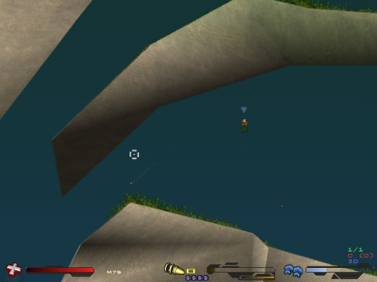
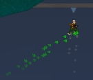

Per registrare la versione di Soldat ORA vai a questa sezione.
Se non sei ancora convinto guarda i benefici della registrazione.
Cosa ottengo registrandomi a Soldat?
Soldat
è gratuito ma se ti diverte dovresti considerare di
registrarti.
Registrarsi è la cosa giusta da fare, fa si
che il gioco viva poichè l'autore viene motivato e ha fondi
per continuare a lavorarci.
Costa solo 13.99$
(11 €). Quindi pensaci se ti piace Soldat.
Oltre
alla sensazione di fare bene e di diventare un membro registrato
della fantastica comunità di Soldat,
OTTIENI MOLTI
benefici, tra cui:
PROFILI PERSONALIZZATI

Ti permette di
salvare le opzioni personali in quanti profili tu voglia.
Profili
differenti ti permettono di accedere direttamente con differenti
opzioni tra le quali: opzioni di gioco, opzioni del setup, impostazione del
server locale, nome del giocatore e opzioni visuali.
Fa si che le opzioni possano
essere cambiate molto più facilmente. Gli screenshot seguenti
ve lo mostrano.
INTERFACCE PERSONALIZZATE

Puoi cambiare la
grafica, la posizione e e il comportamento dell'interfaccia
in-game.
Se sei stufo della solita interfaccia di Soldat puoi
cambiarla facilmente.
Al momento in Soldat
sono disponibili le seguenti Interfacce.
Se non ti basta puoi
facilmente scaricare tonnellate di interfacce create dai giocatori o
create da te con Soldat Interface Maker.
|
|
|
|
|
|
|
|
|

LETTORE Mp3

Ascolta i tuoi
Mp3 preferiti durante il gioco
con il lettore Mp3 di Soldat.
Basta copiare i file
della playlist 'm3u' e metterli nella cartella 'mp3' . Puoi
facilmente crearli in qualsiasi lettore mp3 (come Winamp).
In questo modo potrai avere ore e ore di musica disponibile mentre ammazzi altri giocatori.

Accesso facilitato al lettore Mp3 mentre giochi usando il tasto F5 - stop/play ed F6 – traccia successiva.
REGISTRAZIONE DI DEMO ILLIMITATE
La versione non registrata di Soldat ti permette di registrare una demo (F8 key) per solo 3 minuti. La versione registrata può registrare demo illimitate,quindi puoi conservare tutte le tue battaglie e creare video a tempo pieno! Registra le tue partite in una demo adesso!
CAMBIO DI RISOLUZIONE
I giocatori di Soldat
non registrati possono giocare solamente con la risoluzione
predefinita 640x480. Dopo la registrazione potrai cambiarla in quanto
vuoi, 800x600, 1024x769, 1280x1025, 1600x1200! Una maggiore
risoluzione significa più spazio per il gioco. Interfacce,
testo della chat, lista delle uccisioni e punteggio diventano più
piccoli lasciando il resto per giocare!
E' anche il modo per
eseguire soldat su un monitor widescreen (usa la modalità
windowed e adatta la grandezza della schermata). Clicca su questi
screenshot e decidi:


NESSUNA SCHERMATA PUBBLICITARIA
Dopo la registrazione avrai una versione completamente giocabile di Soldat senza inutili schermate pubblicitarie e parole. Nessun banner all'inizio del gioco.
DIVENTA UN MEMBRO ONORARIO DELLA COMUNITA' DI SOLDAT
Un'immagine
che mostra che supporti il gioco. Appena ti registri apparirà
un simbolo speciale (una stella gialla) accanto al tuo nome
nella tabella dei punteggi ogni volta che giochi a Soldat.
Grazie a questo tu sarai un membro onorario della comunità di Soldat e tutti lo sapranno.
Grazie a questa stella tutti ti riconosceranno. Nessun niubbo non registrato che usa il tuo nome!

Se VUOI la
versione registrata di Soldat vai QUI
ADESSO.
Se
non vuoi ecco qui ancora ALTRE opzioni:
MINIMAPPA!
I
giocatori registrati possono attivare o disattivare la minimappa
di Soldat premendo F2. La minimappa mostra il terreno, come anche la
posizione dei tuoi compagni di squadra (indicazioni speciali per
mostrare chi sta usando la chat al momento), il tuo compagno che ha
la bandiera e la posizione di quest'ultima se è in base. Non
sarai più confuso dopo aver scaricato una nuova mappa. Guarda
la minimappa in azione (clicca sulle immagini):


FIAMME DEL JET COLORATE
Solo
gli utenti registrati hanno la possibilità di
avere le fiamme del Jet di colori unici. Se non vuoi avere la solita
fiamma gialla che esce da sotto gli stivali registrati ora! Con queste
verrai sempre riconosciuto e nessuno si confonderà con
qualcun'altro. Solo gli utenti registrati possono averle.


MODIFICA INTERFACCIA
Con l' Interface
Maker potrai modificare le intefacce correnti.
Se non ti piace la
posizione delle statistiche dell'arma o della salute puoi facilmente
spostarla e adattarla alle tue necessità.
CREA
LA TUA INTERFACCIA PERSONALE
Disegna la tua
interfaccia! Può essere fatta facilmente con l' Interface
Maker.
Se non vuoi fare tutto puoi modificare alcune delle
interfacce standard.
Puoi anche creare solo un'interfaccia che
cambi unicamente il tuo mirino!
Puoi creare o scaricare dozzine
di cursori per il tuo uso personale.
SCONTI PER GRUPPI
La registrazione può
essere più conveniente se registri la tua copia per un clan
o più di due utenti alla volta. Non è necessario
avere un clan per ricevere uno sconto, è solo un vantaggio per
i gruppi.
Ogni terza copia è
gratuita.
Quindi se registri 2
copie ne ottieni una in più gratuitamente.
Se ne registra 4
ne ottieni 2 gratuitamente e via di seguito.
Per fare ciò
registra Soldat normalmente su Plimus.com o ShareIt.com (i
collegamenti sottostanti) e compra per esempio: 3 licenze/posti. Poi
inviami una e-mail con 4 nomi e cognomi o soprannomi con i quali il
gioco sarà registrato e io ti invierò 4 codici di
registrazione ( non dimenticarti di scrivere il tuo ID dell'ordine
per rendere la registrazione più veloce).
Quindi
pensaci.
Giocare a Soldat è gratuito ma necessita del
tuo supporto, puoi sentirti bene , e in più avrai molte
nuove opzioni con cui divertirti!
Quindi
come posso registrare Soldat?
Ecco due veloci servizi per effettuare il tuo pagamento:
|
PLIMUS.COM La
Registrazione costa 13.99$.
Si accetta anche la valuta che non è degli Stati Uniti.
Tutti i pagamenti sono sicuri. Clicca qui
per visitare la pagina di registrazione di Soldat su Plimus e
ottieni la tua copia registrata in pochi minuti: |
|
SHARE-IT Raccomandato
per utenti europei (minor costo dei trasferimenti bancari,
disponibili in lingua tedesca,francese,spagnola,italiana). Clicca
qui per visitare la pagina di registrazione di Soldat su Share-It
e ottieni la tua copia registrata in pochi minuti: |
La
registrazione è valida per tutta la vita (tutte le versioni
future).
Dopo
la registrazione riceverai un codice e potrai usufruire
istantaneamente della versione completa di Soldat.
Riceverai
la registrazione in pochi minuti dopo l'effettuato pagamento e
potrai divertirti con la versione completa di Soldat subito!
Se hai problemi o domande contatta l'help center di Plimus o Share-it o semplicemente inviami una e-mail qui michal.marcinkowski<AT>gmail.com
Grazie e Buon Divertimento!